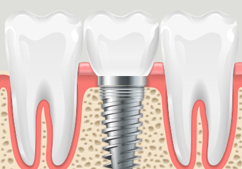

치료기간 단축
발치과 동시에 임플란트를
즉시 식립하여 치료기간을 단축
발치와 동시에 임플란트를 식립해
치료 기간과 내원 횟수를 줄입니다
<%=m_client_en%>
하루만에 스피드하게!
임플란트의 매식과 동시에 상부의 보철물을 수복하고 즉시 기능을 가능하게 만들어 주기 때문에
하루만에 바로 일상생활 복귀는 물론 식사도 가능합니다.
내원 당일
발치
임플란트
식립
임시보철물
결합
(치아상실)
(생략가능)
| 분류 | 발치 및 회복 |
임플란트 식립 |
임시 보철물 |
최종 보철물 |
|---|---|---|---|---|
| 일반 임플란트 |
약 2개월 ~ 6개월 소요 |
임플란트 완성 |
||
| 하루완성 임플란트 |
당일 완료 | |||
발치과 동시에 임플란트를
즉시 식립하여 치료기간을 단축
발치 후 치아 주변 잇몸 퇴축을
방지하여 잇몸뼈 보존

골형성 능력이 좋은 시기를
이용해 자연스런 골재생력 유도
최소한의 잇몸 절개로
통증, 붓기 등 불편감 해소
치조골의
손상이
없는 환자
현재 식사를
제대로 못하는
환자
사고로 앞니가
빠진 지 얼마
안된 환자
출국 등의 이유로
즉시 임플란트를
해야 하는 환자